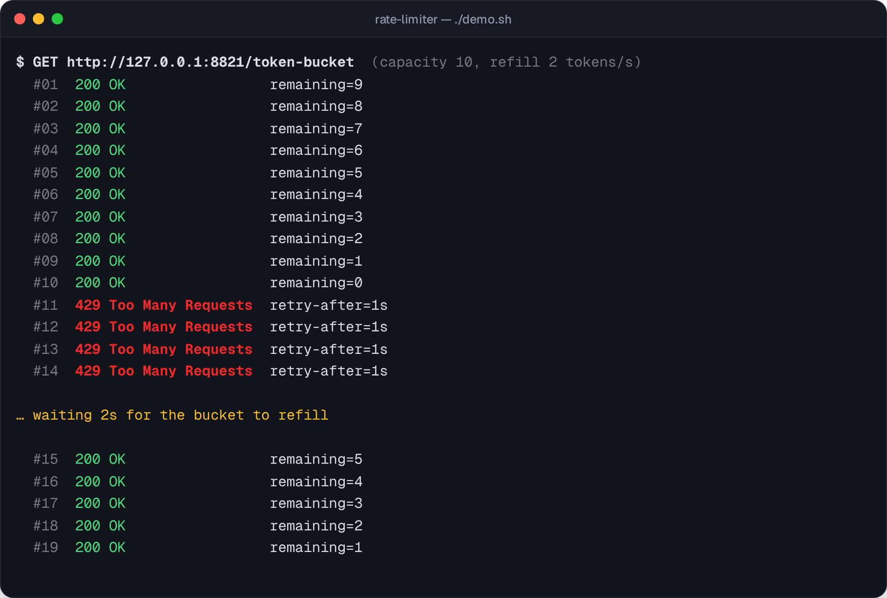
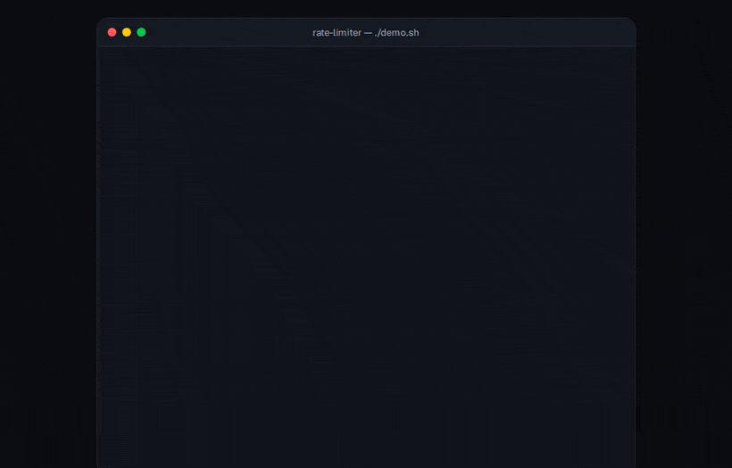
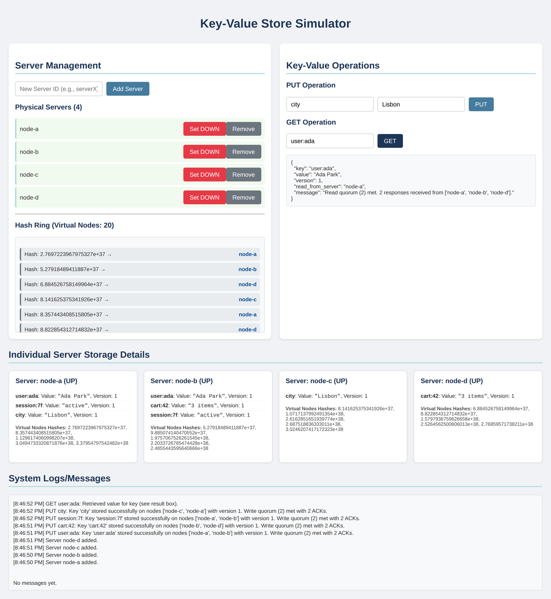
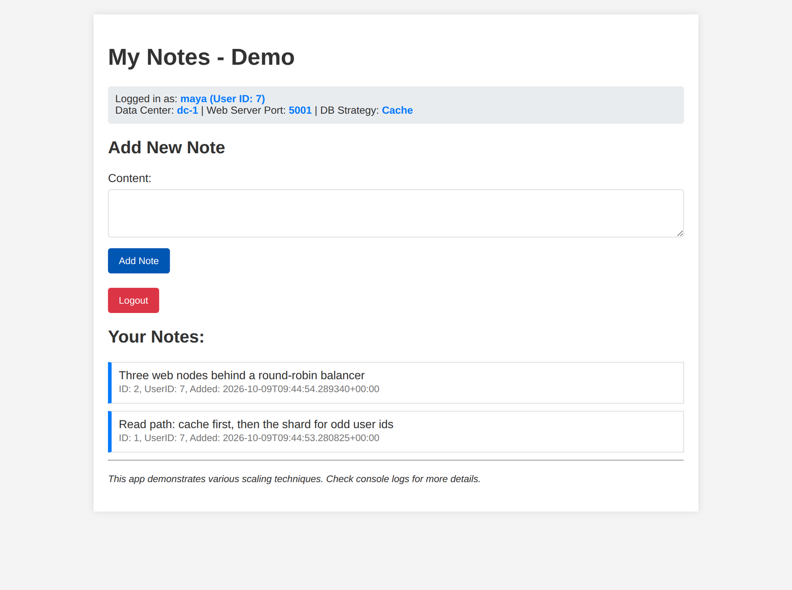
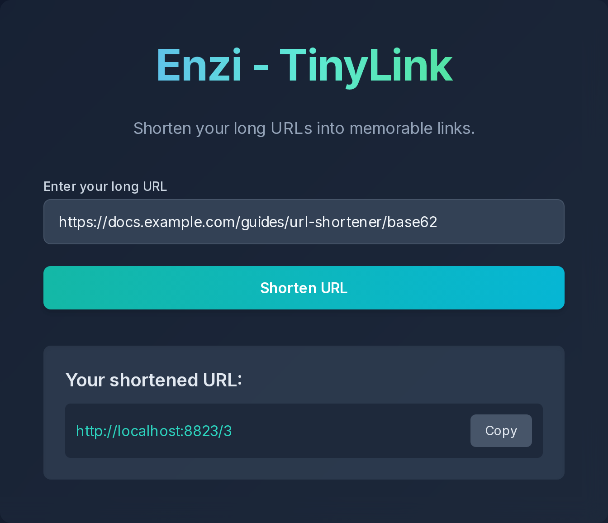
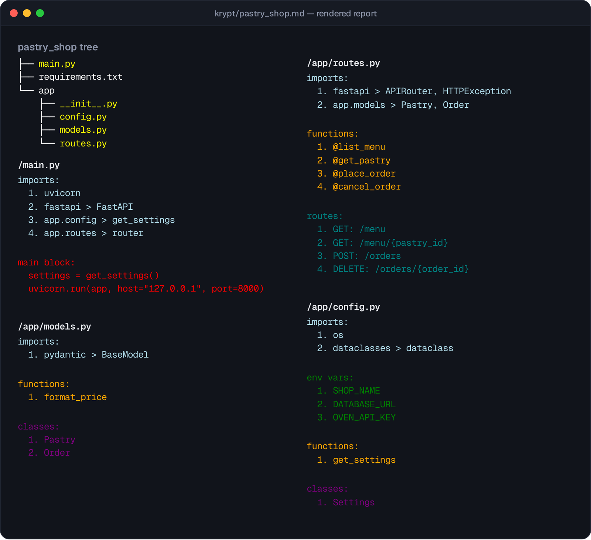
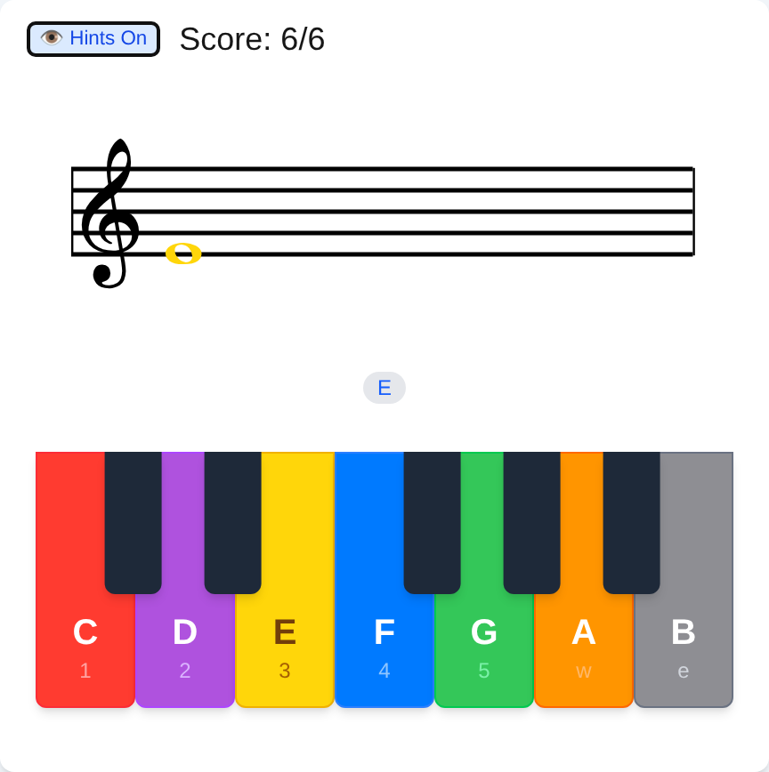
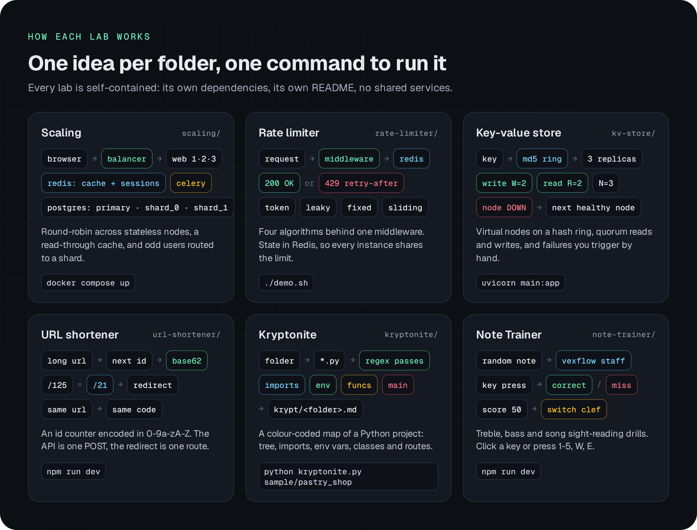

Rate limiterrate-limiter/
Token bucket, leaking bucket, fixed window and sliding log behind one FastAPI middleware. State lives in Redis, so every instance shares the same limit and a burst gets a 429 with Retry-After.
./demo.sh
Six small engineering labs you can run on your own machine. Four take on classic system design problems, two are handy little tools.

Every screenshot below is the real app running locally, with made-up demo data.

Token bucket, leaking bucket, fixed window and sliding log behind one FastAPI middleware. State lives in Redis, so every instance shares the same limit and a burst gets a 429 with Retry-After.

Consistent hashing with virtual nodes, three replicas per key and N/W/R quorums. Take a node down by hand and watch reads and writes move to the next healthy one.

A notes app on three stateless Flask nodes behind a round-robin balancer, with sessions and a read-through cache in Redis, sharding by user id and Celery jobs. One compose file runs it all.

Each new link takes the next id, encoded in base62 as the short code. One POST creates it, one route redirects, and the same URL always gets the same code.

Point it at a Python folder and it writes a colour-coded map of the tree, imports, env vars, functions, classes, routes and main block. It ships with a tiny sample project to try.

Learn to read treble and bass clef: a note appears, you press the piano key (or 1-5, W, E). Hit 50 and it moves you to the other clef. There are simple songs to sight-read too.
Each lab has its own dependencies and README. There are no shared services and no accounts or API keys.
